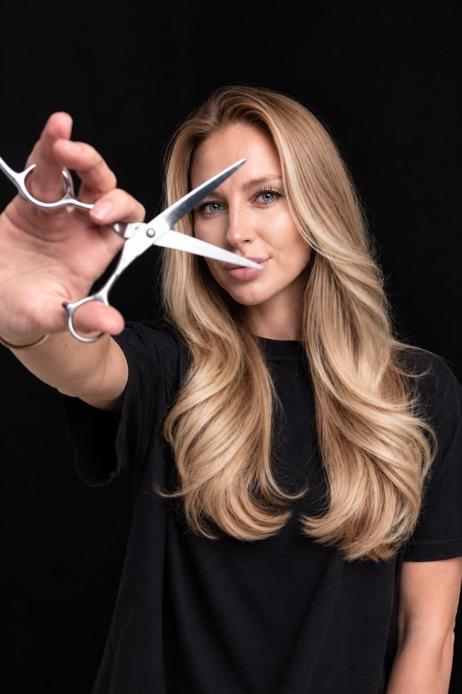
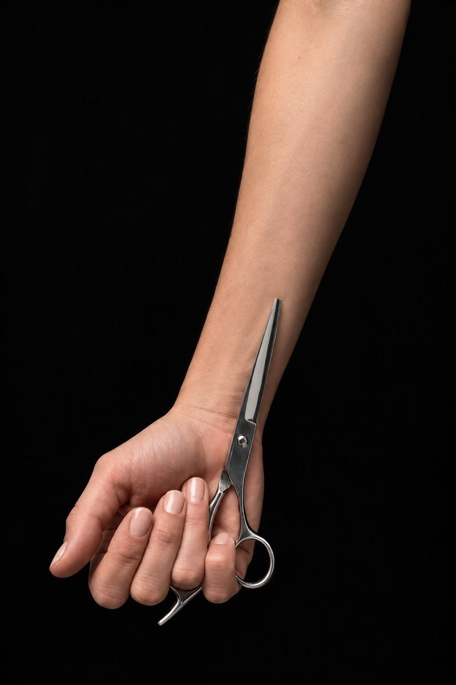
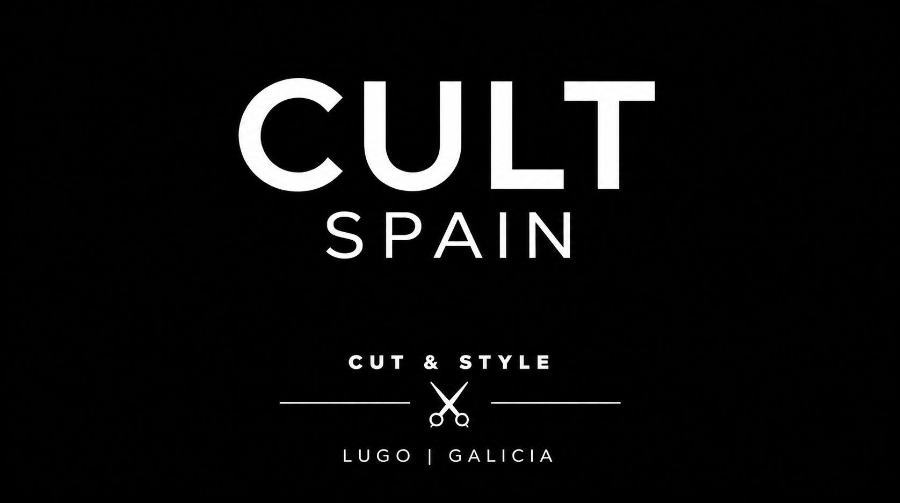

CUT & STYLE · LUGO, GALICIA
Tu estilo.
Tu actitud.
Un corte que habla de ti.
Un espacio para encontrarte.
THE ART OF YOUR STYLE
01 — LA CARTA
Pequeños cambios.
Otra forma de verte.
Encuentra tu próxima cita.
Mujer y hombre.
Color, cuidado y bienestar.

EL DETALLE LO CAMBIA TODO.02 — NUESTRA ESENCIA
Olga
Shyshko.
Peluquera · Colorista · Propietaria
Tu estilo empieza por ti. Cada detalle cuenta tu historia.
Olga Shyshko es peluquera, colorista y el alma de CULT SPAIN. Desde 2017, su trabajo gira en torno a una idea: encontrar el corte, el tono y los detalles que hacen que un estilo se sienta tuyo.
Con formación oficial en peluquería en Galicia, combina técnica y sensibilidad estética para dar intención a cada forma y cada matiz. En su salón de Lugo, cada cita empieza con una conversación y se construye con atención a los detalles.
Un color con intención. Un estilo con personalidad. Tu momento en CULT.
Encuentra tu estilo con Olga ↗
03 — TU PRÓXIMA CITA
Un momento
para ti.
Elige tu servicio, tu día y tu hora.
Nos vemos en CULT.
¿Qué te apetece?
Tu solicitud queda pendiente.
El salón confirma la cita.